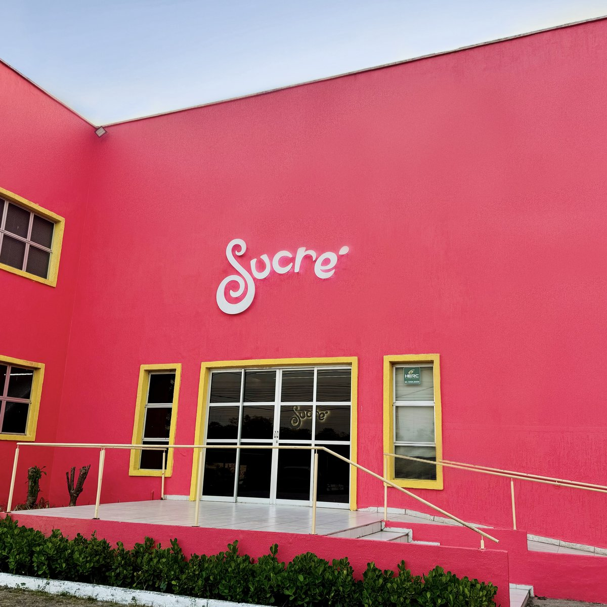
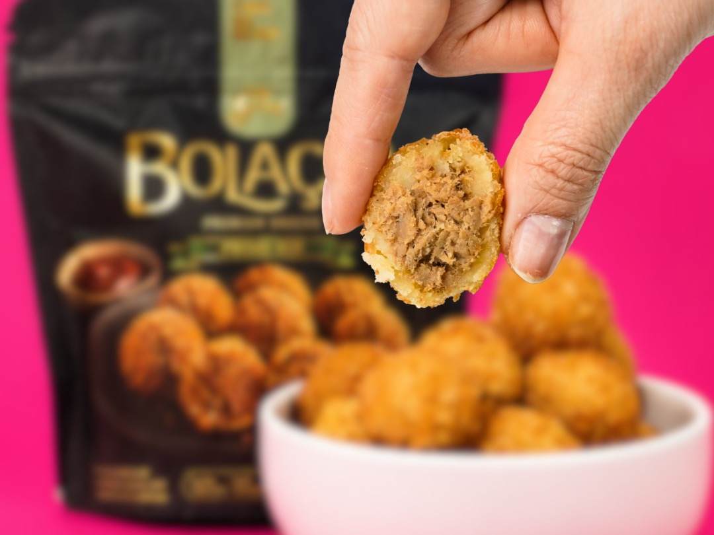
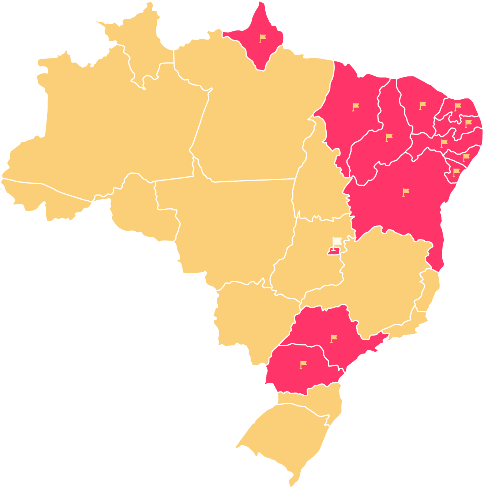

Mini Coxinha é Sucré
A pioneira. Massa de mandioca da agricultura familiar, a original desde 2014.
Conhecer a mini coxinha →Congelados premium · clean label · desde 2007
Salgados congelados com ingredientes de verdade, prontos em minutos no forno ou na airfryer. A gente cuida do sabor pra você cuidar do que importa.


Nossa história
A Sucré nasceu na cozinha da casa da Lia Quinderé, do sonho de fazer algo que a fizesse pular da cama todo dia. O diploma era de Direito, mas o coração bateu mais forte na confeitaria: ela foi estudar patisserie na Le Cordon Bleu, na França, e voltou pra Fortaleza decidida a empreender.
Do café de 3 mesas ao país inteiro: hoje somos a marca de salgados congelados que mais vende no Nordeste, e a 4ª do Brasil. Sem abrir mão do que nos trouxe até aqui: os melhores ingredientes e muito, muito capricho.
Tudo começa em casa: um cafezinho de 3 mesas dentro de uma loja de presentes. Os doces viram febre e nasce a confeitaria fina com ingredientes regionais.
Nasce a coxinha de mandioca, com ingrediente da agricultura familiar. O Ceará prova, e pede mais.
Chega a versão mini congelada, pronta na airfryer ou no forno. A Sucré ganha as gôndolas dos supermercados.
Virada de chave: viramos um negócio de impacto. Nosso propósito ganha nome: apoiar e transformar a vida de mães.
A confeitaria se despede, a marca acelera. Entramos nas principais redes de supermercado do país.
A marca de salgados congelados que mais vende no Nordeste. E a 4ª do Brasil. E a gente tá só começando. 💪
Nossos xodós
A pioneira. Massa de mandioca da agricultura familiar, a original desde 2014.
Conhecer a mini coxinha →
Prontos em minutos, no forno ou na airfryer. O lanche que salva o dia.
Conhecer os mini pastéis →

É mais que bolinha: massa de mandioca recheada, crocante, pronta em 8 minutos.
Conhecer o Bolaço →Saiu do forno 🔥


Nosso propósito é gostoso
Desde 2020 somos um negócio de impacto: priorizamos a contratação de mães, investimos no desenvolvimento profissional de cada uma e oferecemos atendimento psicológico durante o horário de trabalho. Acreditamos no equilíbrio entre performance e progresso, porque crescer de verdade é crescer junto.
Quem tá por trás
“Empreender é crer no invisível.”
Lia Quinderé se formou em Direito, mas foi na cozinha que encontrou o que a fazia pular da cama. Estudou patisserie na Le Cordon Bleu, voltou pra Fortaleza e começou tudo na cozinha de casa. Hoje lidera uma das maiores marcas de congelados do país, sem perder a alma, a fé, nem o sotaque.
Seguir a Lia → Seguir a Sucré →Você encontra a Sucré nos melhores supermercados dos estados marcados no mapa. E no Ceará, a gente também entrega na sua casa, pelo delivery. 🛵
